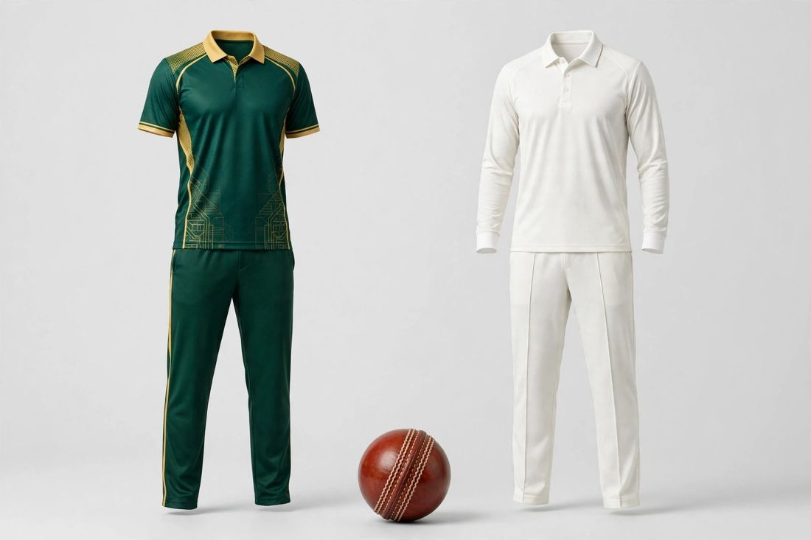
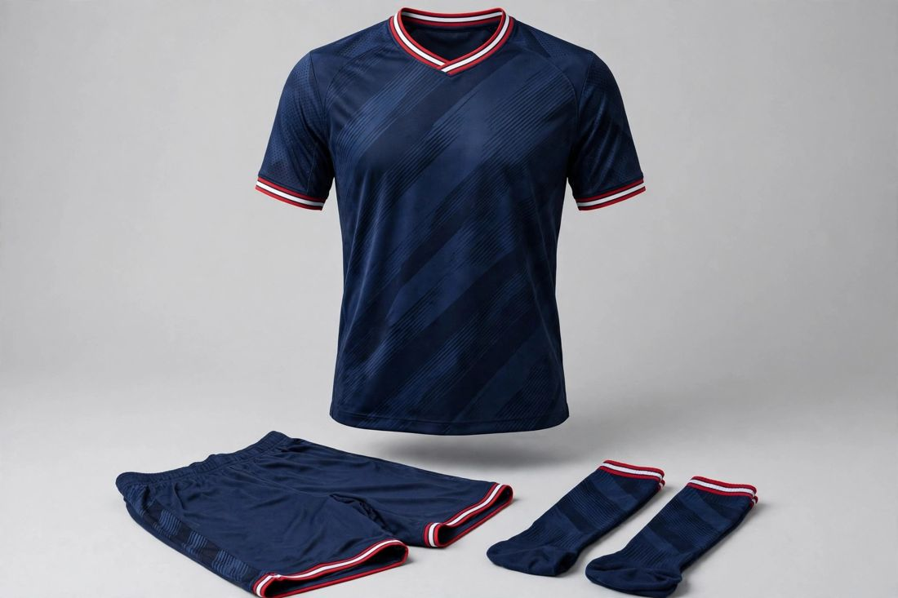
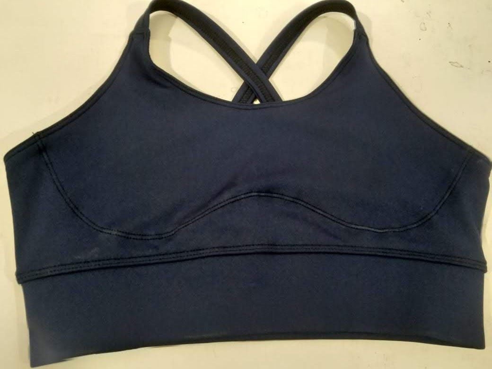
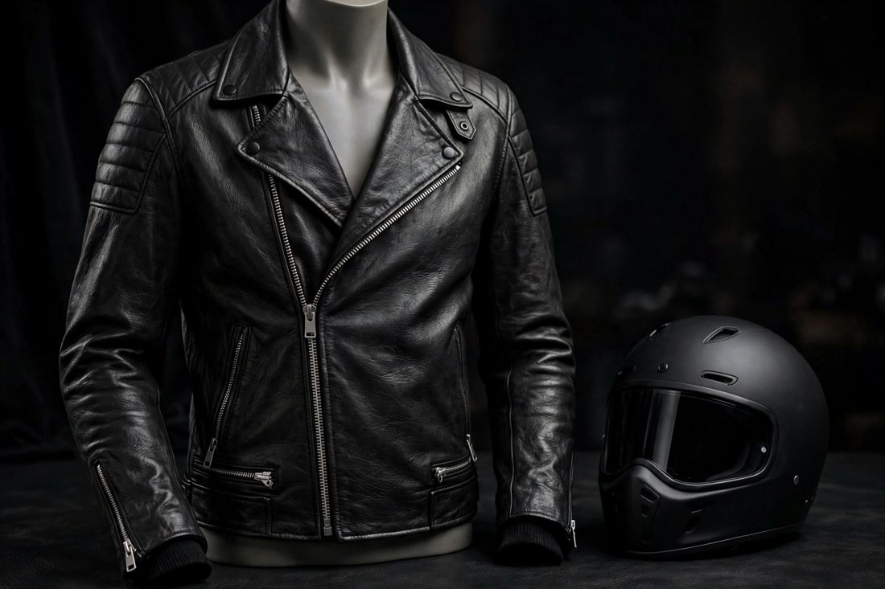
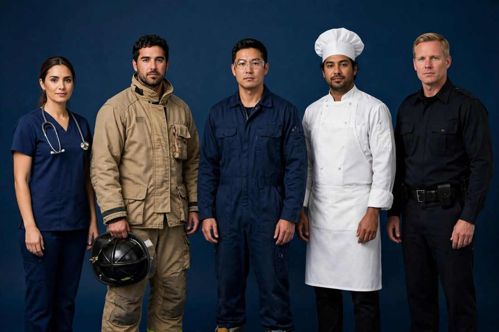

Sports Teamwear
A sportswear manufacturer for clubs and academies: custom football kits, American football, basketball, baseball and cricket uniforms with full sublimation and embroidery options.
Explore teamwear →Safe-T TECH International is a custom clothing manufacturer in Sialkot, Pakistan, built for small and growing brands: low MOQ trial orders, fast sampling and export-grade finishing across sportswear, women's fashion, streetwear, uniforms — plus third-party inspection services for buyers sourcing anywhere in Pakistan.

As an OEM clothing manufacturer, everything is made to your design, tech file or reference sample — with your brand labels, your tags and your packaging. Send us a design and we manufacture it exactly to your specifications.

A sportswear manufacturer for clubs and academies: custom football kits, American football, basketball, baseball and cricket uniforms with full sublimation and embroidery options.
Explore teamwear →
A women's clothing manufacturer for boutiques and labels: seasonal fashion, dresses, co-ord sets and athleisure, made to your patterns and fits.
Explore women's →
Private label swimwear manufacturer: one-piece suits and bikini sets in your fabrics and colours, plus hand-finished crystal competition bikinis.
Explore swimwear →
Private label intimates manufacturer: bras, lace sets, nightwear, babydolls and bodysuits made to your designs, fabrics and sizes, with your labels sewn in.
Explore lingerie →
Leather jacket manufacturer with production fully in-house: biker, bomber and fashion styles in your specified quality — A Grade, full-grain, lambskin and calfskin.
Explore leather →
Custom streetwear manufacturer: varsity jackets, heavyweight hoodies (450–500 GSM), tees, cargos, joggers and coordinated sets with in-house embellishment.
Explore streetwear →
A custom uniform manufacturer for every field: nurse uniforms, doctor coats, OT uniforms, certified firefighter turnout suits, industrial coveralls, rig gloves and corporate uniforms.
Explore uniforms →
Buying from Pakistan? Our surveyors inspect your order at the factory — production checks, pre-shipment inspection, container loading supervision and factory audits, anywhere in Pakistan.
Explore inspection →A low MOQ clothing manufacturer for startups and growing labels — we treat a 30-piece trial order with the same care as a 3,000-piece production run.
Share a tech file, design or even a clear photo of what you want to make.
We develop your sample in 7–10 working days and send photos for approval.
Production with in-line checks; small orders can check one piece from the run while the rest continues.
Final inspection with photos before packing, then dispatch to your door or port.
Answers to the questions buyers ask us most — minimum order quantities, sampling, private labels, exports and getting a quote.
Our trial MOQ is 15–50 pieces per style for most clothing lines, so startups and small brands can start without a big risk. Uniforms start from 20 pieces per style, and swimwear from 30–50 pieces per style.
Send us your design, tech file or even a clear photo first — we quote exactly for that piece, then develop your sample in 7–10 working days and share photos for your approval before bulk production.
Yes — everything is private label. We sew in your brand labels and tags, and we can add a “Made in [your country]” tag if you request one; otherwise our standard “Made in Pakistan” tag is used.
Sports teamwear and sportswear, women's fashion and athleisure, swimwear and crystal competition bikinis, bras and lingerie, leather jackets, streetwear and outerwear, and uniforms and protective workwear. We also provide third-party inspection services for buyers sourcing anywhere in Pakistan.
Yes — we export from Sialkot, Pakistan to North America, Europe and beyond, by air (DHL/FedEx) or by sea, with final quality-check photos shared with you before dispatch.
Message us on WhatsApp at +92-339-5099397 or email contact.safettech@gmail.com with your design or tech file. We reply with an exact quote for that piece — we never quote blind without seeing the design first.
Practical guides for brands, clubs and buyers — written by the manufacturer, covering MOQs, sampling, private labels, teamwear, leather and inspections.
Start with our practical guide to launching a private label clothing brand with a low MOQ — then browse upcoming guides on football kits, pre-shipment inspections, leather grades, club teamwear and competition bikinis.
View GuidesSend your design today — samples in 7–10 days, trial orders from just 15–50 pieces.